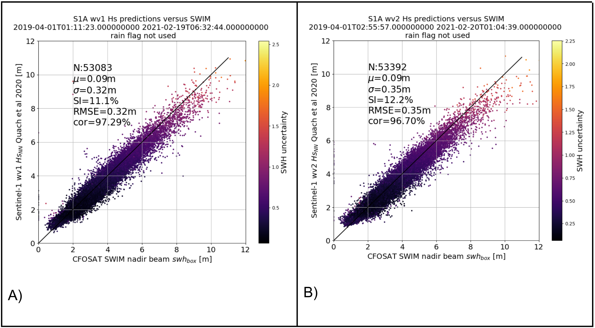

5.9. L2P “Quach” SAR WV by Ifremer#
This section covers the the wave height estimation from Sentinel-1 WV using Quach et al methodology (IFREMER & University of Hawaii)
5.9.1. Methodology#
University of Hawaii and IFREMER estimate the significant wave height from synthetic aperture radar (SAR) using statistical models. The accuracy of existing models is limited by the reliance on wave spectra from global physics models rather than direct observations to fit parameters. The observational data set consists of 780,000 collocations between five altimeters and two Sentinel-1 (S-1) SAR satellites. The altimeter database used as target reference is the Ribal and Young, (2020) calibrated altimetry dataset. It was used as reference to train the convolutional neural network (CNN). 2015-2017 observations were used to train the model and test the model on data from 2018. The altimetry dataset is the reference to train a deep neural network regression model for predicting significant wave height and its uncertainty. The reference altimeter observations and neural network architecture improve wave height root mean square error (RMSE) by 25 cm with respect to previous paper (Stopa and Mouche 2017), achieving RMSEs of 0.25-0. 4 m relative to independent observations from altimeters and buoys. This reduces the error of the current state-of-the-art approach by half. In the round-robin competition the model most accurately predicted the wave height relative to other models such as Stopa and Mouche (2017) and an retrained model of Schulz-Stellenfleth et al., (2007) in Pleskachevsky et al., (2019) which used wave model data and linear regression models or shallow neural networks.
The CNN uses input from the image modulation spectra from multiple looks of an ocean scene. Other features were included in the training dataset: geographical parameters such as the normalized radar cross section, normalized image variance, incidence angle, latitude, longitude, and time of day. Additionally, an orthogonal set of parameters following Schulz-Stellenfleth et al., (2007), called CWAVE has been added for the Hs regression. The CWAVE parameters have minimal impact within the model and as the training data increases the dependence on the CWAVE parameters decreases. The CWAVE parameters have been kept in the model because of the improvement in the extremely small and large wave heights. These parameters help to reduce the effects of over fitting. Ribal and Young, (2020) dataset is showing consistent significant wave height estimations between altimeter platforms. Furthermore, the Sentinel-1 platforms: Sentinel-1 A and Sentinel-1 B are also well calibrated to each other and the data can be used interchangeably. For further details of the model setup see Quach et al., (2021).
Spatial wave height RMSEs are larger in the extra-tropics (0.8 m) relative to the low latitudes (0.2 m). Accurate predictions wave heights can be achieved in nearly all SAR images over the ocean even when the SAR images contain distinct atmospheric imprints. In elevated wave heights (Hs>6 m), the model demonstrates an average wave height accuracy within 0.5-1 m of the altimeter observations in both tropical and extratropical cyclones. Instead of relying on the set of engineered CWAVE features that capture most of the discriminative information, the deep learning approach learns directly from the low-level, high-dimensional image spectra. Furthermore, Quach et al 2021 results indicate that there is still room for improvement with additional training data, especially in extreme sea states with Hs > 8 m. Thus, one can expect the statistical model to improve as more collocation events are collected.
References
Pleskachevsky, A., S. Jacobsen, B. Tings, and E. Schwarz, “Estimation of sea state from Sentinel-1 synthetic aperture radar imagery for maritime situation awareness,” Int. J. Remote Sens., vol. 40, no. 11, pp. 4104–4142, Jan. 2019.
Quach, B., Y. Glaser, J. E. Stopa, A. Mouche, P. Sadowski, 2020. Deep Learning for Predicting Significant Wave Height from Synthetic Aperture Radar, IEEE Transactions on Geoscience and Remote Sensing, pgs 1-9, doi:10.1109/TGRS.2020.3003839
Ribal A., and I. R. Young, “33 years of globally calibrated wave height and wind speed data based on altimeter observations,” Scientific Data, vol. 6, no. 1, pp. 1–5, May 2019.
J. E. Stopa and A. Mouche, “Significant wave heights from Sentinel-1 SAR: Validation and applications,” J. Geophys. Res., Oceans, vol. 122, no. 3, pp. 1827–1848, Mar. 2017.
J. Schulz-Stellenfleth, T. König, and S. Lehner, “An empirical approach for the retrieval of integral ocean wave parameters from synthetic aperture radar data,” J. Geophys. Res., vol. 112, Mar. 2007, Art. no. C03019, doi: 10.1029/2006JC003970.
5.9.2. Content#
Variable Name |
Description |
Units |
|---|---|---|
angle_of_incidence |
incidence angle of the WV acquisition |
degree |
heading |
satellite heading relative to geographic North in clockwise convention |
degree |
swh |
total C band significant wave height |
m |
swh_uncertainty |
standard deviation associated to hs: level of confidence of the NN model |
m |
swh_quality |
quality of C band significant wave height measurement |
|
swh_rejection_flags |
consolidated instrument and ice flags |
|
wind_speed |
wind speed coming from ESA OCN WV product (CMOD-based wind inversion without Bayesian scheme) |
m s-1 |
sigma0 |
sigma0 (Normalized Radar Cross Section) |
dB |
normalized_variance |
Normalized variance of digital numbers (complex I+Q values) |
5.9.3. Validation of Quach SAR product#
Several inter comparisons have been performed between the Hs estimation using Quach 2020 algorithm and moored buoys, altimeters, numerical model forecasts. The first document to cite is Quach et al, 2020. The validation against SWIM nadir beam onboard CFOSAT mission is particularly interesting because the product provided by CNES (French spatial agency) is not present in the training dataset (Ribal and Young altimeters database) and the quality of the SWH at 1Hz have demonstrated good performances (see Hauser et al, 2020 10.1109/TGRS.2020.2994372) with respect to MF-WAM numerical model. It is worth mentioning that this product is using one of the most recent re-tracker algorithms, the so-called ‘Adaptive retracking’.

Fig. 5.11 A) and B) are examples of SWH performances for WV1 (resp. WV2) with respect to SWIM nadir 1Hz measurements in open ocean with acquisitions in between 55° North and 55° South (to avoid sea-ice or icebergs contaminations).#